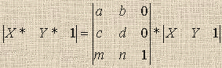
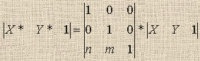
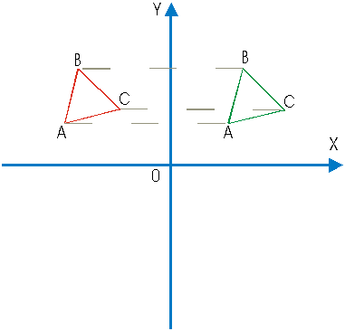
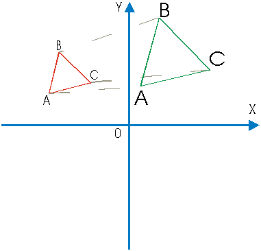
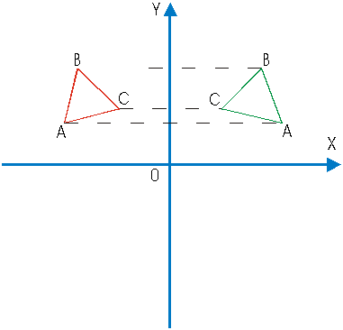
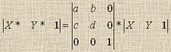
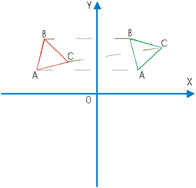
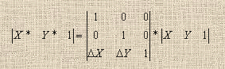

ДВУМЕРНЫЕ
ПРЕОБРАЗОВАНИЯ ИЗОБРАЖЕНИЯ
Цель работы: изучение математических методов, моделей программных средств двумерных преобразований графической информации.
- изучить теоретическую часть;
- подготовить исходные данные и выполнить экспериментальную часть;
- сделать графическую интерпретацию полученных результатов;
- ответить на контрольные вопросы.
Список рекомендуемой литературы
Изображения, представленные с помощью средств машинной графики, можно рассматривать как комбинацию прямых, точек и символьного текста. Точка определяется двумя координатами (X, Y), отрезок прямой может быть представлен координатами его начала (X1, Y1) и конца (X2, Y2), а текст - путем комбинации точек или отрезков. Совокупность координат точек может быть представлена матрицей (
смотри литературу)Преобразования точек и линий можно осуществить путем преобразования матриц. Допустимые действия над этими матрицами определяются правилами матричной алгебры (сложение, вычитание, умножение, обращение). Всевозможные графические преобразования можно осуществить с помощью базовых преобразований. Таковыми являются
:Для унификации моделей и удобства применения к геометрическим преобразованиям обычно используются однородные координаты. Существует общая форма записи операций преобразования в 2
D - пространстве:
В этой формуле используются следующие обозначения
:- X - абсцисса точки;
- Y - ордината точки;
- X* - новая абсцисса точки;
- Y* - новая ордината точки;
- a - коэффициент вращения и масштабирования по X;
- b - коэффициент вращения;
- c - коэффициент вращения;
- d - коэффициент вращения и масштабирования по Y;
- m - коэффициент переноса по Х;
- n - коэффициент переноса по Y.
Все возможные преобразования 2
D - сцены, возможно, осуществить, последовательно применяя базовые двумерные преобразования, или построив матрицу этого преобразования по его геометрическому описанию. Элементы матрицы аффинного преобразования не несут в себе явно выраженного геометрического смысла, поэтому, чтобы найти элементы соответствующей матрицы необходимо использовать некоторые специальные приемы.При смещении фигур на плоскости необходимо учитывать константы переноса. Константы переноса определяют направление и модуль переноса точек на плоскости. Необходимо использовать 2 константы для переноса по осям
X и Y. При этом матрица аффинного преобразования имеет вид:
Здесь используются следующие коэффициенты матрицы
:- n - коэффициент переноса по оси Х;
- m - коэффициент переноса по оси Y.

При масштабировании фигур на плоскости необходимо учитывать коэффициенты масштабирования. Коэффициенты масштабирования определяют изменение размеров изображения. Если коэффициент меньше единицы, происходит сжатие изображения. Необходимо использовать 2 коэффициента для масштабирования по осям
X и Y. При этом матрица аффинного преобразования имеет вид:
Здесь используются следующие коэффициенты матрицы
:- a - коэффициент масштабирования по оси Х;
- d - коэффициент масштабирования по оси Y.

Отображение фигуры определяется ее поворотом на 180 градусов вокруг оси координат. При этом необходимо задать одну из осей, вокруг которой должно произойти отображение. Необходимо использовать 2 коэффициента для определения отображения. Если коэффициенты имеют значения соответственно -1, 1, то происходит отображение вокруг оси
Y, если наоборот, происходит отображение вокруг оси X. При этом матрица аффинного преобразования имеет вид:
Здесь используются следующие коэффициенты матрицы:
- a - коэффициент признака отображения оси Х;
- d - коэффициент признака отображения оси Y.

Вращение фигуры осуществляется около начала координат. В общем случае вращение около произвольной точки может быть выполнено путем переноса центра вращения в начало координат, поворотом относительно начала координат, а затем переносом точки вращения в исходное положение. Поворот вокруг начала координат на произвольный угол j может быть выполнен с помощью матрицы аффинного преобразования:

Здесь используются следующие коэффициенты матрицы
:- a - коэффициент вращения, а = cos(j );
- b - коэффициент вращения, b = sin(j );
- c - коэффициент вращения, c = -sin(j );
- d - коэффициент вращения, d = cos(j ).

Таким образом, весь спектр геометрических преобразований на плоскости можно представить с помощью последовательности базовых геометрических аффинных преобразований - переноса, масштабирования, отображения, вращения. Преобразования в трехмерном пространстве могут быть рассмотрены аналогично при введении координаты
Z и повышения порядка матрицы аффинного преобразования до 4.Задан треугольник на плоскости
XY тремя вершинами. Требуется осуществить его перенос по осям X и Y на величины D X и D Y соответственно.Аффинная операция переноса

Для решения этой задачи нужно к каждой паре координат точек треугольника применить операцию переноса. После применения операции переноса получаем треугольник, смещенный на заданные величины по
X и по Y.Аналогично осуществляется перенос других фигур на плоскости координат.
- Каким образом представляются изображения в системах машинной графики ???
- При помощи, каких математических объектов осуществляется преобразование изображений ???
- Каким образом реализуется перенос изображения в системах машинной графики ???
- Как выполняется масштабирование изображения в системах машинной графики ???
- Как осуществляется масштабирование изображения в системах машинной графики ???
- При помощи, каких математических объектов и как осуществляется вращение изображения ???
Список рекомендуемой литературы
- Роджерс Д., Адамс Дж. Математические основы машинной графики. - Машиностроение, 1980.
- Аммерал Л. Машинная графика на языке C. В 4 - х книгах. - Сол Систем, 1992.
- Шикин Е. В., Боресков А. В., Зайцев А. А. Начала компьютерной графики. - Диалог - МИФИ, 1993.